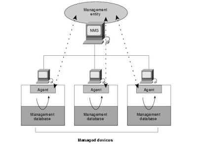
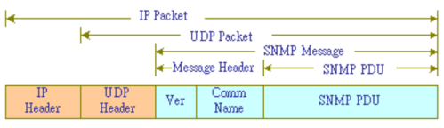
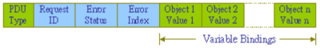
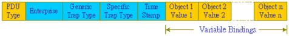
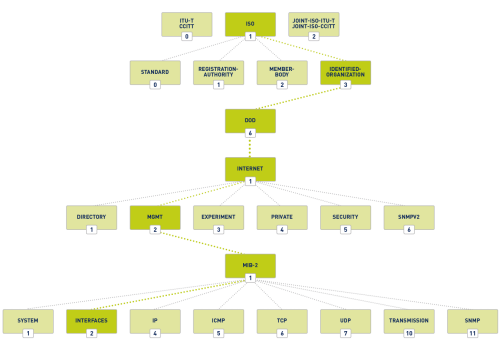

-p161,162: SNMP
SNMP → Simple Network Management Protocol
SNMP vulnerabilities
HERESNMP
is used for exchanging management information between network devices(e.g.:used to configure a router or simply
check its status)
SNMP network has three key components:
•
network-management system
(NMS) → also called manager is usually the System Administrator that send/receive commands to/from the
agents
•
managed device → is a network node that can be a router, switch, hub, computer,
printer... that contains an agent
•
agent → software that runs on managed devices

Ports
UDP 161 → for general messages
UDP 162 → for Trap messages
SNMP versions
• SNMPv1: is the most vulnerable (clear text protocol)
• SNMPv2: can be compromised because of
its inherent weaknesses.
• SNMPv3: although it uses encryption, it is still susceptible to attacks like brute
forcing
SNMP operations
Get → The NMS sends a
get request to the
agent. The agent responds with a
get-response to the
NMS
GetNext → used by the NMS to determine what variables a certain agent supports
Set → used to configure
devices and change device settings
Trap → used to "trap" events from the device and report them back
to the manager. A trap message is used to alert the manager to the fact that a "trap" event is occured,
this can meaning that the threshold defined by the manager (with the set command) has been reached, or that an
error/event of some type has occurred
SNMP message
A SNMP Message is composed by:
•
Message Header:
◇
Version
Number ◇
Community Name (or string), which is used as
a form of “secure” password authentication in SNMP. There are two types of Community Names:
▪
Private Community Name allow "write" access
▪
Public Community Name allow "read" access
•
SNMP PDU (protocol data units): depends on the type of message that is
being sent
◇ Get ,Get-response, GetNext Set
 ◇ Trap

MIB (Management Information Base)
MIB (Management Information Base) is a database of informations which define the properties of the
managed device (such as a router, switch, etc.).
This database is structured as a tree and each element of this
tree is an OID (Object Identifier), an address used to uniquely identify managed devices and their properties that
can be read/written by the NMS(manager)
bibliography:
https://docstore.mik.ua/orelly/networking_2ndEd/snmp/ch02_06.htmhttp://www.tsnien.idv.tw/Internet_WebBook/chap16/16-3%20SNMP%20%E5%8D%94%E5%AE%9A.html
{kind=link}
{kind=link}
{kind=link}